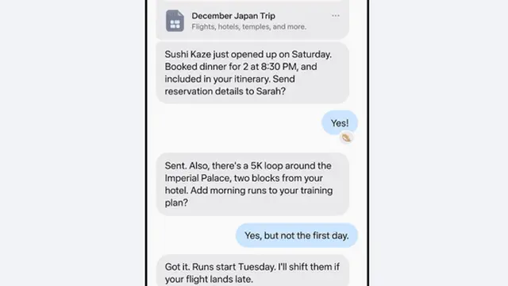
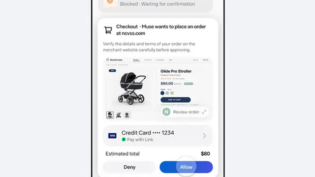

Meta launches Muse in Japan: the AI agent's first stop outside North America
- Who: Meta — the Japan launch was announced by Meta executive Alexandr Wang and in Meta’s official announcement
- What: Muse, Meta’s personal AI agent, launches in Japan — its first market outside North America
- When: October 23, 2026 (the North American early access began in September 2026)
- Adoption: 10 million+ people completed the initial setup in the United States and Canada, per CEO Mark Zuckerberg; Impress Watch reports 10 million+ downloads in about a month
- Access: iOS and Android apps plus muse.ai; most basic functions free, with a paid subscription plan (prices not disclosed)
- Integrations: Gmail, Google Calendar, Instagram, Stripe, Shopify, Trip.com, Agoda, Klook (426,000 bookable experiences across 4,600+ destinations); Mercari, Money Forward ME, and Ticket Pia in development for Japan
- Safety: per-user Muse Secure VM isolation; a separate Sentinel agent controls internet access; user approval required before important actions
- Privacy: users can opt out of having conversations used for AI training; Meta says interaction data is not shared with its ad systems
Meta today launched its personal AI agent Muse in Japan, the first market outside North America to get the tool. Muse is not another chatbot: it acts on users' instructions — sending emails, booking travel, filling in forms on websites — and the rollout comes with a travel-booking integration from Klook live on day one. (Superpower Daily)
First stop outside North America
Muse debuted in North America in September, and Meta says the takeup has been fast. CEO Mark Zuckerberg said more than 10 million people completed the initial setup of Muse in the United States and Canada, and Impress Watch reported more than 10 million downloads in roughly the first month. Meta executive Alexandr Wang announced the Japan availability in a post telling users to download it on October 23 — a shift from the Japanese launch page, which had listed Japan's availability as undecided when the product was introduced in September. (AiSeek, RuntimeWire)
Japanese users reach Muse through dedicated iOS and Android apps and the muse.ai website. Most basic features are free; Meta also sells a paid subscription plan for heavier use. Meta has not disclosed prices or the limits of the free tier for Japan. (Superpower Daily)
What it actually does
Give Muse a goal and it works out the steps itself: it opens a browser, fills in information on input forms, and carries the task through. Longer jobs keep running in the cloud after the app is closed, and the agent pings the user when something changes or a decision needs approval. It also remembers past conversations and uses them to tailor suggestions. (AiSeek)

The launch partner that shows the model best is Klook. The travel platform integrated its inventory — 426,000 bookable experiences across more than 4,600 destinations — so travellers can search, compare, book, and pay for activities in a single conversation. Muse places the order, hands the user to Klook's secure payment page, and confirms the booking in the chat, seeking confirmation before any sensitive step. "For over a decade, Klook has worked with local operators to bring a world of diverse and authentic experiences online," said Jakii Chu, Klook's senior vice president of global marketing, "and now we're taking travel discovery to the next level with Meta's Muse." (Marketech APAC)
The Japan integration map
The broader connector list reads like a daily-life stack: Gmail, Google Calendar, and Instagram for mail, schedules, and saved content, plus Stripe, Shopify, Trip.com, and Agoda for shopping and travel. For Japan specifically, Meta says it is developing integrations with flea-market app Mercari, household-finance service Money Forward ME, and ticket platform Ticket Pia. Those are launch-linked plans, not live connections — Meta has not disclosed what features they will unlock or when. Masahiro Ajisawa, Meta's Japan head, said the goal is to connect Muse with the services people regularly use for shopping, travel, and everyday scheduling. (Superpower Daily)
Safety architecture and the privacy line
An agent that can spend money needs a leash, and Meta's is architectural. Muse runs inside a per-user isolated cloud environment — Muse Secure VM — where connected-service data and credentials are stored; a separate agent called Sentinel manages internet access. The agent cannot see users' passwords or payment details, must ask for approval before important actions like sending email or placing an order, and keeps an inspectable record of actions taken and scheduled. Users choose which apps to connect and can change or revoke permissions at any time. (AiSeek, Superpower Daily)

On privacy, Meta offers an opt-out so conversations with Muse are not used for AI model training, and says interaction data inside the virtual machine is not shared with its advertising systems. Not everything shown at Meta Connect in September is confirmed for Japan: the enhanced voice mode, Muse's own email address, and the Realtime Avatar (English-only) will get a separate Japan release announcement. (Superpower Daily)
The launch arrives under scrutiny. Concerns were reported on October 20 about sensitive information being exposed through Muse's shared links, a reminder that the agent's convenience — acting across the web on a user's behalf — is also its attack surface. How Meta closes that gap will matter as much as the Japan integrations. (AiSeek)
Frequently asked questions
What is Meta's Muse, and what can it do in Japan?
Muse is Meta's personal AI agent, launched in Japan on October 23, 2026 — its first market outside North America. Beyond answering questions, it acts on users' instructions: sending emails, booking travel, and filling in forms on websites. It runs in the cloud, keeps working after the app closes, and remembers past conversations to personalize suggestions. It is available through iOS and Android apps and the muse.ai website, with a free basic tier and a paid subscription plan.
Which services can Muse connect to?
Muse connects to Instagram, Gmail, and Google Calendar, plus Stripe, Shopify, Trip.com, Agoda, and Klook — whose 426,000 bookable experiences across more than 4,600 destinations can be discovered and booked in a single conversation. For Japan, Meta says integrations with Mercari, Money Forward ME, and Ticket Pia are in development, but they are not available yet.
How does Meta handle safety and privacy for Muse?
Muse asks for approval before important actions such as sending email or placing an order, and it cannot see users' passwords or payment details. It runs in a dedicated per-user Muse Secure VM cloud environment, with a separate Sentinel agent managing internet access. Users can opt out of having conversations used for AI training, and Meta says interaction data is not shared with its advertising systems.